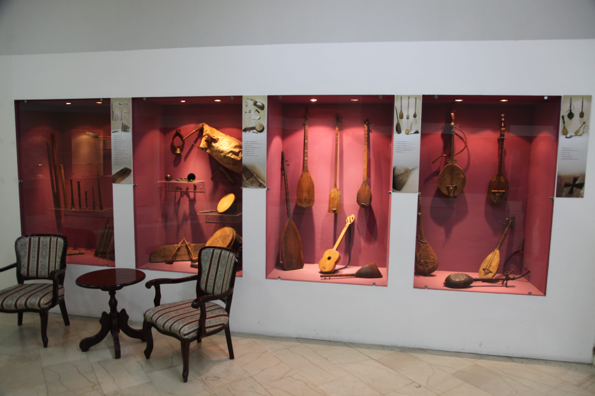
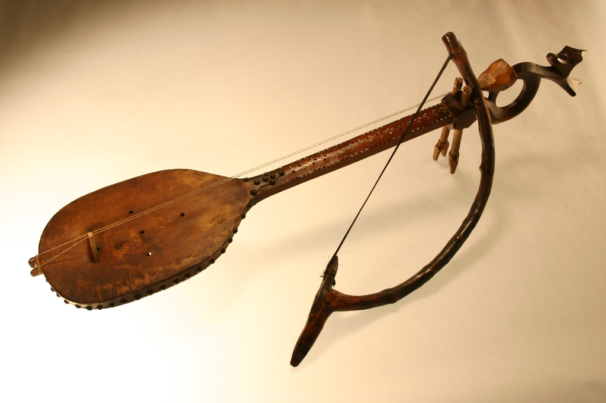

Посебан одјељак чине традиционални музички инструменти подијељени у четири цјелине. Приказани су аерофони, идиофони, мембранофони и кордофони инструменти некадашње Босанске крајине а и шире.


Аудио запис кола "Тројанац" из збирке етномузикологија